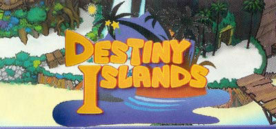
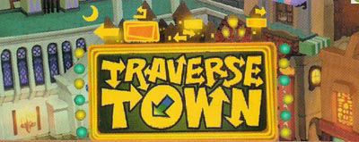
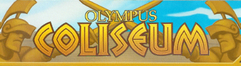

Characters
Characters Places
Places Stories
Stories Species
Species Organizations
Organizations Glossary
Glossary Transportation
Transportation Monsters
Monsters Jobs
Jobs Summons
Summons Items
Items Magic/Skills
Magic/Skills Weapon Types
Weapon Types In-Crossovers
In-Crossovers Ex-Crossovers
Ex-Crossovers Release Dates
Release Dates Name Origins
Name Origins Famous Moments
Famous Moments Music Database
Music Database Features
Features Game Help
Game Help Game Evolution
Game Evolution Square Art
Square Art Fan Flash
Fan Flash Final Fantasy Forums
Final Fantasy Forums Updates
Updates Site Info
Site Info Feedback
Feedback Full Index
Full Index Links
Links Staff
StaffKingdom Hearts was released for the PlayStation 2 in March 2002 in Japan and November 2002 in America. It was a joint effort between Squaresoft and Disney Interactive, incorporating story elements, gameplay, and characters from both companies. The basic plot is that Sora, a young boy, has his island home invaded by Heartless (creatures born of the darkness in people's hearts). He must travel to various worlds (which are based on Disney movies and cartoons) with Donald Duck and Goofy to lock the heart of the worlds and stop the Heartless. The majority of the game is based on Disney movies, but it incorporates a slew of cameos and concepts that crossover with the FF series.
Another version of the game, called Kingdom Hearts: Final Mix, was released in Japan only in December 2002. This version included the changes made in the American version, as well as additional weapons, bosses, abilities, items, and scenes.
All the crossover characters in Kingdom Hearts don't really play the characters their based on. For example, Leon and Yuffie are friends, but come from completely separate games. They all also make their home in a place called Hollow Bastion. As best as can be figured, they maintain the personalities and looks from their respective games, but are supposed to be original characters that have no story-line relation to their original game counterparts. Kingdom Hearts has no canonical ties to any Final Fantasy games, but that doesn't make it any less of a delight to see them walking around, speaking, and fighting in real time.
Tidus (voiced by Shaun Fleming): Tidus (pronounced tee'dus in this game) is back as a much younger version of himself, probably about 14-15 years old. He is one of Sora's childhood friends on Destiny Islands, but more associated with Wakka and Selphie. He's got all his signature moves and attacks, but he uses a stick instead of a sword. Original game: FF10
Wakka (voiced by Dee Bradley Baker): Wakka is also much younger, but he's still got all his blitzball skills. Just like FFX, he uses his blitzball to attack from a distance. Original game: FF10
Selphie (voiced by Molly Keck): Like the others, Selphie Tilmitt is younger, and instead of using a nunchaku, she whips you with a jump rope. Original game: FF8
Leon (a.k.a. Squall Leonhart) (voiced by David Boreanaz): Squall Leonhart finds himself thrust into leadership yet again. He's gotten a bit older and grown his hair longer, but he's just as melancholy as always (if not moreso). He seems a bit more sure of himself, but tortured by the defeat and exile by himself and his friends. His jacket now has a pair of red wings on the back, probably a reference to Rinoa. After the Heartless took over his world, he changed his name to Leon (perhaps out of embarrassment). Seeing him use his gunblade in battle is a real treat. Sora fights him once at the beginning of the game (though it doesn't matter if you win or lose) and can later fight him in the Olympia Coliseum (where he partners with Yuffie one time and Cloud another). He attacks with fire (kinda like Seifer did in the opening cutscene of FF8), some moves from Renzokuken (his limit break), Fated Circle, and Rough Divide, and if you get his HP down far enough, he'll perform a version of Blasting Zone (where he extends the length of his gunblade with energy, which increases its range and speed). Leon's voice is David Boreanaz, best known as Angel from Buffy the Vampire Slayer and its successful spinoff series, Angel. Original game: FF8
Cid (no voice): Cid Highwind seems to have cleaned up his act; he's handed in his pilot's uniform for a muscle T-shirt, and (this being a Disney game) has quit smoking and started chewing on toothpicks. Initially he runs the accessory shop in Traverse Town, but you know he'll end up having something to do with airships, no? Actually there aren't any airships, but there are gummi ships, and he ends up being your ship technician, selling gummi blocks on the side. Original game: FF7
Yuffie (voiced by Christy Carlson Romano): Yuffie Kisaragi (pronounced yoo'-fee, according to this game) is probably the least changed of the bunch, and somehow managed to become good buddies with Leon. Her cheerful peppy nature provides a great respite from Leon's brooding. Later in the game, you can fight her at Olympia Coliseum, although she is not very difficult. Her battle strategy is to gain distance and throw her shuriken, and she can also make a giant one out of magic. She also has the Clear Tranquil limit break she can use to heal herself. Original game: FF7
Aerith (voiced by Mandy Moore): The origins of Aerith Gainsborough are a bit of a mystery, and never explained in the game. She isn't back from the dead, she just never died. Along with Leon and Yuffie, she was exiled from Hollow Bastion by the Heartless, but she doesn't really do much in Kingdom Hearts, other than giving you a bunch of Ansem's Reports and the Curaga spell near the end of the game. At the end of the game, you see Cloud walk up to Aerith in the Hollow Bastion library. Original game: FF7
Cloud (voiced by Steve Burton): Cloud Strife is back and more badass than ever. Somehow, he's become even more taciturn than Leon. Cloud's gear has changed a bit - his Buster Sword has been wrapped with bandages, and he's been given Vincent's cloak and gold claw gauntlet (confirmed in Tetsuya Nomura interview). As you can see from the artwork, he also has a black bat wing, but the wing only appears during a special move inside the actual game. Cloud exists separately from the other crossover characters and is searching for Sephiroth... unfortunately he runs into Hades (from Disney's Hercules) who takes advantage of him and makes him sign a contract to kill Hercules in the tournament in exchange for helping him find Sephiroth. In the process, Hades pits him against Sora, but the battle is interrupted when Hades sends Cerberus to attack, which takes Cloud out (forced to be saved by Hercules, how embarrassing). It becomes apparent that during his quest, Cloud tried to exploit the darkness, but fell into it instead. You can fight him in the coliseum as well, where he has an interesting move called "Sonic Blade", where he flies around the arena, dashing back and forth with his sword. In Final Mix, after defeating Sephiroth, you see a scene where Cloud confronts and fights Sephiroth. Original game: FF7
Sephiroth (voiced by Lance Bass): Sephiroth is not in the original JP release of Kingdom Hearts, but was added in the American and Final Mix versions. He's a secret boss fought in the Olympia Coliseum, only only after beating the Hades Cup (he's even got a brand-new arrangement of One-Winged Angel just for his fight). His outfit is relatively unchanged from his original game (including masamune), but with a single black wing. He's also got a lot of special moves, including Heartless Angel (actually used in the final battle of FF7) and Meteor. (Some folks online call Heartless Angel "Sin Harvest", but this is just a mangling based on bad voicing.) He's voiced by Lance Bass, of N'Sync. Yes, that N'Sync. I know, but it's not as bad as it sounds. In Final Mix, after defeating Sephiroth, you see a scene where he is confronted by Cloud, and they fight for a while, after which he vanishes, and Cloud follows. Original game: FF7
The main characters use an airship known as a gummi ship, the only vehicle able to travel between worlds due to the gummi blocks that separate them (it's a metaphorical thing). The gummis are probably a reference to Gummi Bears. In order to get to worlds, you must fly your gummi ship through planned routes, which is a rather simplistic mini-game, similar to old arcade-style shoot-em-ups. However, gummi ships are also customizable. You can add and remove gummi blocks from your ship, and all the gummi blocks are named after magic spells from the FF series. They are:
You can get blueprints to build new ships either in Traverse Town from Gepetto, or from enemy ships in the mini-game (e.g. when you beat an enemy, you can get the blueprint that lets you build that enemy ship). This part of the game has most FF references as the blueprints are named after Final Fantasy elements. The ships don't actually resemble their counterparts in any way (except for a few like Chocobo and Cactuar). Here are the names of those blueprints.
Summons: Alexander, Atomos, Carbuncle, Catoblepas, Cerberus (pic), Diablos, Eden, Golem, Gilgamesh, Ifrit, Ixion, Leviathan, Odin, Pandemonium, Phoenix, Ramuh, Remora, Shiva, Siren, Sylph, Typhoon, Cindy, Sandy and Mindy (the Magus Sisters from FF10), Valefor, Bahamut (Final Mix only) (pic), Moogle (Final Mix only) (pic), Tonberry (Final Mix only) (pic)
Enemies: Adamant, Ahriman, Bomb, Cactuar, Deathguise, Goblin, Imp, Lamia, Omega
Other: Aerith, Chocobo, Cid, Leon, Yuffie, Hyperion (this may or may not be a reference to Seifer's gunblade from FF8)
Cheer and Berserk have names seen before in FF, but don't do the same thing. Scan let's you see the enemy's HP, and Ragnarok is a special air attack that consumes MP. Zantetsuken (Odin's Steel-Bladed Sword attack) is only found in Final Mix and can auto-kill an enemy at the end of a combo.
Regular items: Potion, Hi-Potion, Mega-Potion, Ether, Elixir, Megalixir, Tent, Cottage, Mega-Ether
Synthesis items:Mythril, Mythril Shard, Orichalcum, Dark Matter (Final Mix only)
Accessories: Atlas Armlet, Ribbon, Rune Armlet, Ifrit's Horn, Three Stars (this is the Japanese name for the Economizer in FF6; thanks to Joey Martin for that), Royal Crown (Final Mix only), Ifrit Belt (Final Mix only), Shiva belt (Final Mix only), Ramuh belt (Final Mix only), Moogle Badge (Final Mix only)



Cure, Curaga, Life, Full-Life, Fire, Fira, Firaga, Holy, Protect, Shell, Dispel, Aero, Aerora, Aeroga, Float, Tornado, Drain, Esuna, Haste, Osmose, Warp, Transform, Scan, Thunder, Thundara, Thundaga, Comet, Meteor, Ultima
Metal Chocobo: You win this when you beat Cloud the first time in the coliseum, and it has a Chocobo hanging off the bottom as a keychain.
Lionheart: You win this after defeating Cloud and Leon in the coliseum. It is decorated with Squall's Griever symbol.
Ultima Weapon: This keyblade can only be obtained through synthesizing items. Like the other FF games, it is the best weapon in the game, although its form doesn't have anything in common with Final Fantasy.
Diamond Dust: (Final Mix only) This is obtained after defeating the Ice Titan in the coliseum. It references Shiva's attack.
One Winged Angel: (Final Mix only) This is obtained after defeating the Sephiroth in the coliseum. It rivals Ultima Weapon in strength and length.
Donald's Staffs: Several of Donald's staffs have the head of a black mage on the top
Save the Queen: Donald's best weapon. This can be obtained in the coliseum. (Goofy also has a shield called Save the King, but this name has never appeared in Final Fantasy)
Meteo Strike: (Final Mix only) This is Donald's best weapon in Final Mix, which increases crtical attacks. The name may be a reference to Tifa's limit break - Meteor Strike.
Adamant Shield: Goofy's shield.
Genji Shield: Goofy's shield which you get after defeating Yuffie in the coliseum.
Mythril Shield: Goofy's shield.
Defender: Goofy's shield


Final Fantasy, all games and animation bearing the Final Fantasy name, and all characters in said games or animation are copyright their respective creators, including but not limited to Squaresoft, Square Enix, Square EA, Tokyo TV, and ADV Films.
{kind=link}
{kind=link}
{kind=link}
{kind=link}
{kind=link}